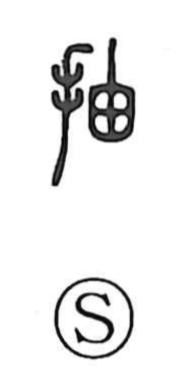

抽

Uncategorized
Kun: | On: chuu
to extract ・ to draw out ・ to pull out
Explanation
A phono-semantic compound: the hand on the left (扌) shows a manual act, while 由 on the right supplies the sound chuu and evokes the form of a bottle gourd whose seeds have ripened, dissolved, and left the shell hollow. From the image of reaching in and pulling out those seeds, the character comes to mean to draw out or extract what is within. This sense appears in words like drawing lots (抽籤・抽選), drawing a sword (抽刀), and in 抽象, abstraction, the act of extracting the essential core. The phonetic 由 similarly marks the on reading in characters such as 宙 and 紬.